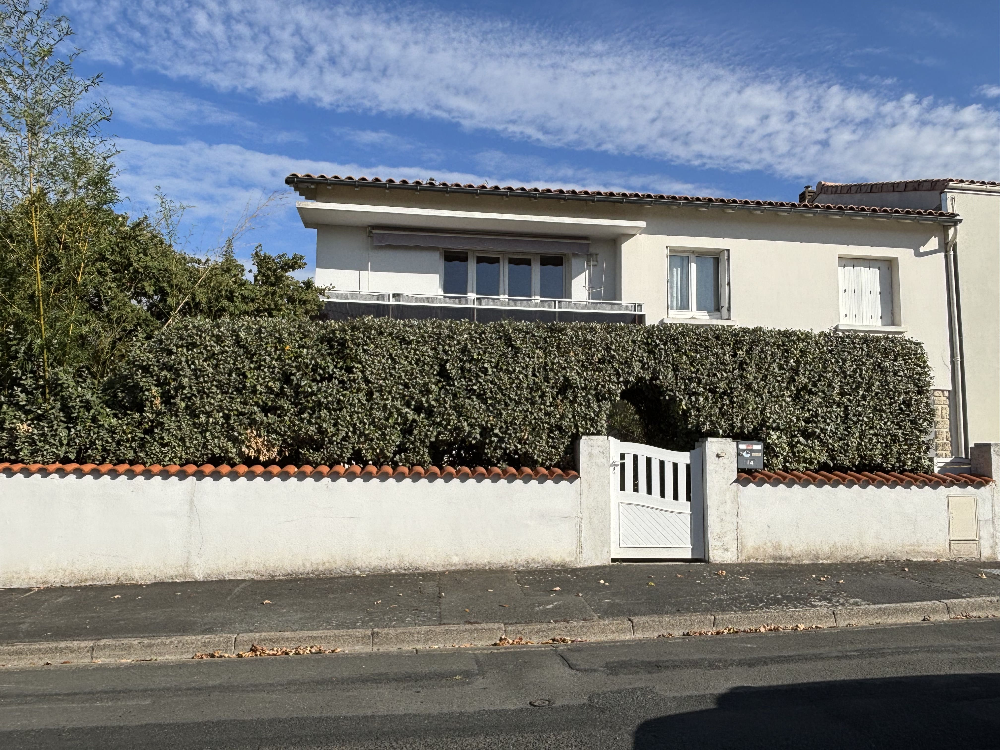
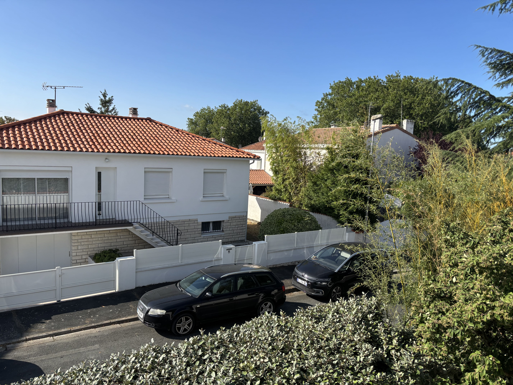
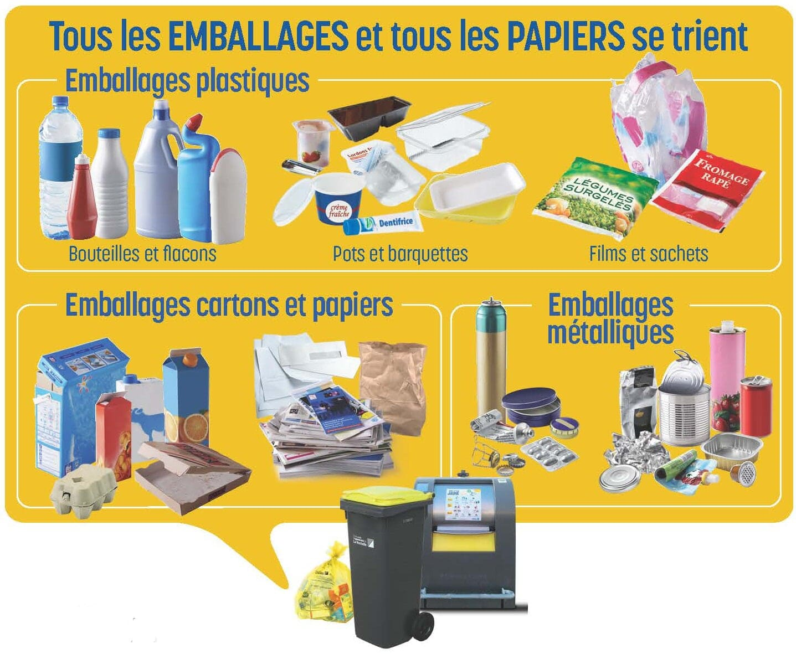
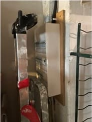
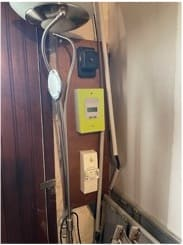
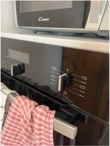
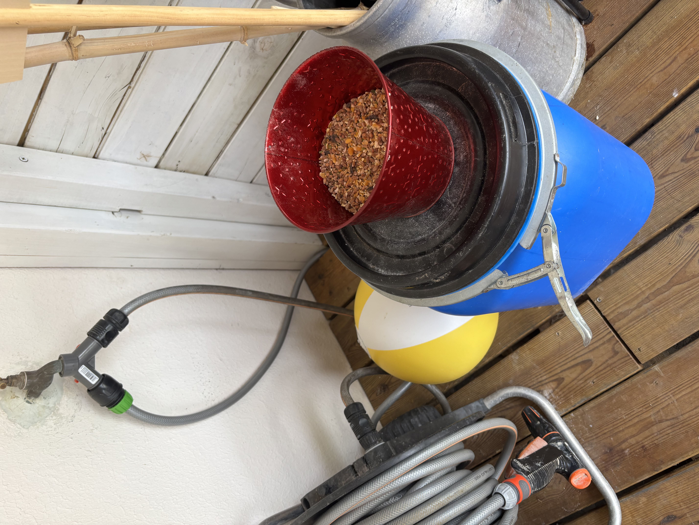
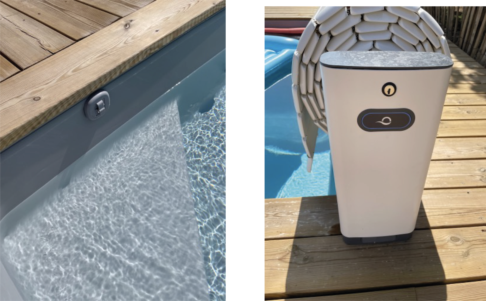
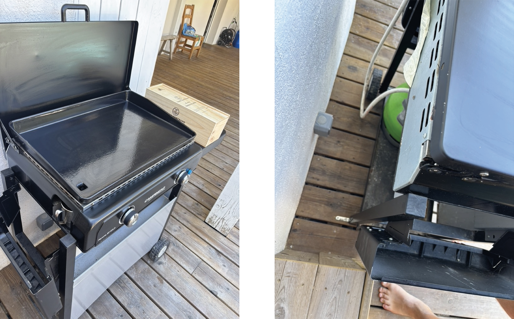
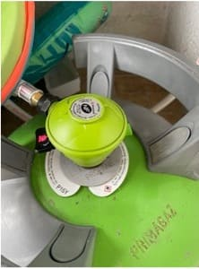

🏠 Welcome to Our Home!
Guest guide & practical information for your stay
1. Arrival & Welcome
Address: 14 rue des Goélands, 17140 LAGORD

Marie-Paule (Alice's mother) will welcome you upon arrival.
📞 Phone: +33 6 86 60 31 79
* Please inform her of your arrival time a few hours in advance to arrange meet-up details.
Parking
You can easily park across the street, directly facing the house. Please note that parking on the sidewalks is strictly prohibited.

Key Set

- 1: Front door
- 2: Garage door (Top and middle locks; we do not use the bottom lock)
- 3: Bike padlocks (Yuba & VSF Fahrrad)
- 4: Yuba bike battery lock
- 5: Garage side door (patio access)
- 6: Pool cover key
2. Living in the House
Bedrooms & Linens
Beds have been made in the ground-floor bedroom as well as in the kids' upstairs bedrooms.
If needed, you can find spare bed sheets in the hallway wardrobe upstairs.
Waste Management
The wheelie bins are located in front of the garage door. For collection, please place them on the sidewalk the evening before:
- 🔵 Blue Bin (general waste): Collection on Wednesday morning (put out on Tuesday evening)
- 🟡 Yellow Bin (recyclables): Collection on Friday morning (put out on Thursday evening)

🍾 Glass recycling: The nearest glass collection point is located on Rue Edwige Feuillère in Lagord.
📍 View on Google Maps
🥬 Food scraps & bio-waste: Our chickens will gladly eat your fruit and vegetable peels!
Wi-Fi Connection
Network: Livebox-ADDO
Password: 250280JG-
Electricity
In case of a tripped circuit, the main electrical panel is located in the garage.


Kitchen Appliances
Oven: The control knob is extremely sensitive. A light touch can inadvertently turn the oven on, so please be careful when walking past.

Bean-to-cup Coffee Machine: Coffee beans are stored in the cupboard inside the kitchen island.
- 💡 Indicator 1: Empty the coffee grounds container located on the left side.
- 💧 Indicator 2: Fill the water reservoir at the back.
- ☕ To brew a cup, simply press one of the top two buttons on the right.

Houseplants
We have a few plants in the living room and a grapevine on the balcony. Giving them a light watering every now and then would be greatly appreciated!
3. Garden, Chickens & Pool
🎋 Watering the Bamboos
If possible, please water the bamboos for 15 minutes each day using the drip irrigation system.
To do this, turn on the pump located at the back of the water tank and set it to 15 minutes.

* This pump runs on battery power. The charger is located in the laundry room.
🐔 Our 4 Chickens: How-To
They lay fresh eggs regularly! Feel free to visit them every day to collect your fresh breakfast eggs.
- Feeding: One daily portion of seeds (stored in the blue container on the patio). Fill half of the red flowerpot.

- Waterer: Please check the water level regularly. To refill:
- Close the white plug at the bottom.
- Fill the top reservoir with tap water (use the watering can located beneath the rainwater tank).
- Close the top cover and reopen the bottom white plug.

💚 Food Scraps: Our hens are fantastic "living composters"!
❌ Strictly avoid: Citrus fruits, raw potato peels, bones, and fishbones.
🏊♀️ Swimming Pool

- Before Swimming: Please rinse off under the shower before entering the pool, especially after going to the beach, to prevent sand from clogging the filtration system.
- Safety Cover: We close it every evening and during extremely hot weather.
⚠️ Mandatory: Remember to remove the 5 attachment rings before opening the cover.
Operation: Turn the key on the right support pillar. A single pulse opens it.
To close, hold the key until the cover is completely shut. - Filtration: Automatic salt chlorination system located in the garage. No manual adjustment needed.
- Pool Vacuum Robot: We run it daily.
- Remove all toys from the water.
- Attach the debris collection bag.
- Plug it in and submerge it in the pool (the cycle lasts ~2 hours; avoid swimming while running).
- ⚠️ To pull it out, use the blue handles and never pull on the power cable.

Plancha & Outdoor Kitchen

A gas plancha grill and cooking hobs are available on the terrace.
📌 Note: The plancha is secured to the patio structure (following local neighborhood thefts), please do not attempt to move it.
You will find the plancha utensils in the small wooden box located in the laundry room.
🔥 Gas Bottles: Please turn off the gas bottles after each use. When opening them, purge the line by pressing the button on the pressure regulator.

Deep Fryer
Feel free to use it. Replacement oil is stored in a canister next to the lower refrigerator.
4. Lagord & Surrounding Area
Nearby Shops (2-min walk)
📍 Neighborhood Shopping Center
- Pharmacy, Newsagent, Bakery (closed on Mondays)
- Carrefour City: Very convenient supermarket, open 7 days a week from 7:00 AM to 9:00 PM (Sundays 8:00 AM – 1:00 PM)
Supermarkets (5-min drive)
E.Leclerc hypermarket, gas station, and organic grocery shop Bio C' Bon.
Local Markets
- Lagord: Friday morning (in front of the neighborhood shopping center)
- La Pallice: Sunday morning (large popular market with food, clothes, etc.)
- La Rochelle: Wednesday & Saturday morning (+ covered food market open daily)
Nearby Restaurants & Outdoor Spots
L'Éphémère de Pampin
Open-air seafront guinguette in L'Houmeau. Tue–Sun 4:00 PM – 10:00 PM.
📍 Open in MapsLa Cabane Maud Chollet
Oyster and mussel grower in Les Boucholeurs village (near Châtelaillon).
📍 Open in Maps🍷 In La Rochelle Old Port: Le Bar du France 1 (Tapas on the deck of a historic museum ship; booking recommended in August).
5. Sightseeing & Day Trips
🏖️ Beaches
- Anse de Pampin (L'Houmeau): 10 min by car / 20 min by bike. Pebble beach (bring water shoes!).
- Châtelaillon-Plage: 17 min by car. Long sandy beach with a lively promenade.
- Île de Ré: Bridge is 5 min away. Summer toll: €18/car. €1 bus shuttles available from Le Belvédère parking lot (Respire Bus Timetable).
- Rivedoux: Right after crossing the bridge.
- Le Bois-Plage (Gros Jonc): 24 min away, wide sandy beach with surf waves.
- Trousse-Chemise: Our absolute favorite beach! At the far end of the island (54 min), quieter and wilder.
🎯 Activities in La Rochelle & Surroundings
- La Rochelle Aquarium: 12 min drive / 15 min bike ride. Open 8:30 AM – 11:00 PM. Online booking recommended. Best visited in the evening.
- Les Cabanes Urbaines: Indoor bouldering gym, eco-hub, bar, and restaurant in Les Minimes.
- Maritime Museum: Self-guided tour aboard historic ships.
- Inter-Îles Cruises: Boat tours to Fort Boyard or Île d'Aix departing from the Old Port.
- VERTIGO Parc (La Jarne): Tree-top adventure park with shaded picnic area.
🌿 Day Trips Further Afield
- Marais Poitevin ("Green Venice"): 40 min away. Traditional boat rides in Arçais or paddle/canoe rentals at Repère des Copains in Magné.
- Rochefort: Visit the historic Corderie Royale naval ropeworks (40 min).
- Futuroscope (Poitiers): High-tech multimedia theme park (1h30).
- Île d'Oléron: Colorful fishing villages and wild beaches (1h10).